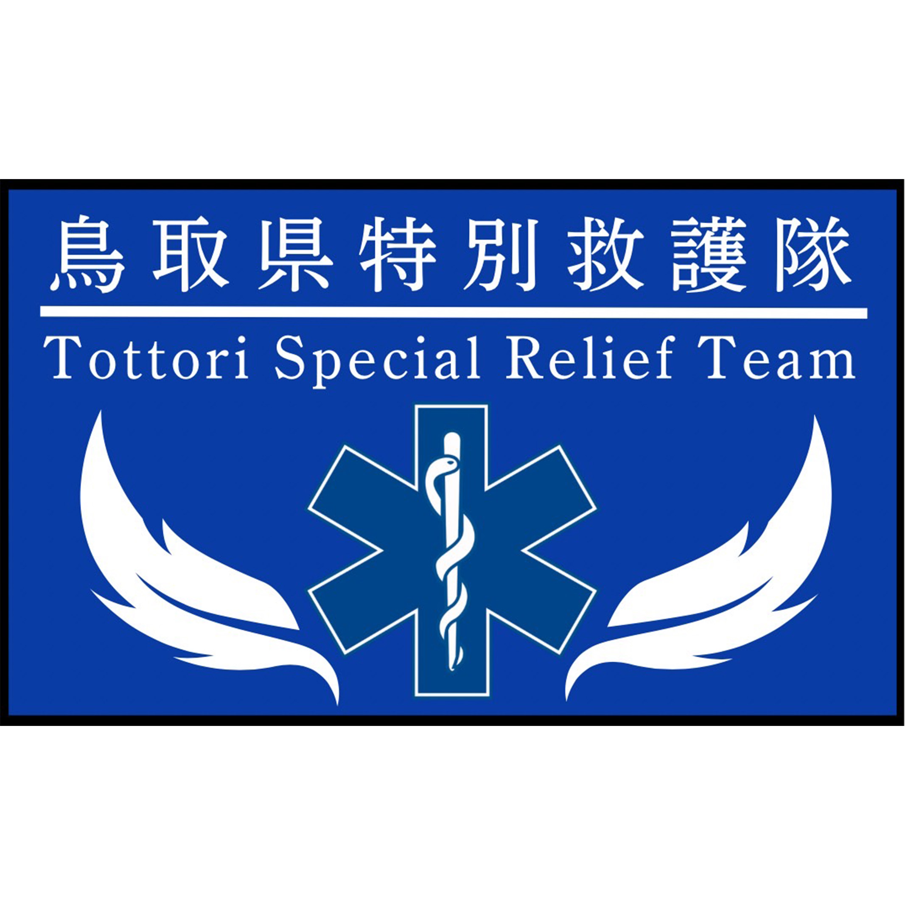

<header class="site-header">
    <div class="header-inner">

        <!-- ロゴ・団体名 -->
        <a href="index.php" class="brand" data-page="index.php">
            

            <div class="brand-text">
                <span class="brand-name">鳥取県特別救護隊</span>
                <span class="brand-en">TOTTORI SPECIAL RELIEF TEAM</span>
            </div>
        </a>

        <!-- ナビゲーション -->
        <nav class="global-nav" aria-label="メインメニュー">

            <a href="index.php"
               class="nav-link"
               data-page="index.pho">
                ホーム
            </a>

            <a href="about.php"
               class="nav-link"
               data-page="about.php">
                私たちについて
            </a>

            <a href="activity.php"
               class="nav-link"
               data-page="activity.php">
                活動実績
            </a>

            <a href="news.php"
               class="nav-link"
               data-page="news.php">
                お知らせ
            </a>

            <a href="request.php"
               class="nav-link"
               data-page="request.php">
                救護依頼
            </a>

            <a href="contact.php"
               class="nav-link nav-contact"
               data-page="contact.php">
                お問い合わせ
            </a>

        </nav>

    </div>
</header>


<script>
    
</script>